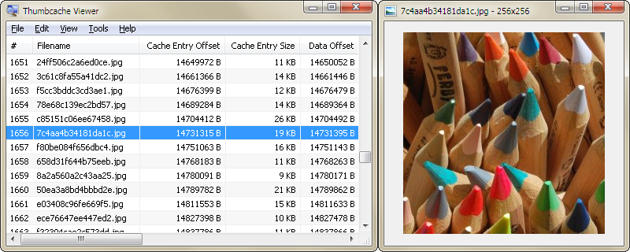

Thumbcache Viewer allows you to extract thumbnail images from the thumbcache_*.db and iconcache_*.db database files found on Windows Vista, Windows 7, Windows 8, Windows 8.1, Windows 10, and Windows 11. The program comes in two flavors: a graphical user interface and command-line interface.
Looking to open Thumbs.db files? Try my Thumbs Viewer instead.
Download Thumbcache Viewer 32-bit
Download Thumbcache Viewer 64-bit
Version 1.0.3.9
Released on 7/14/2023

The main menu will allow you to save entries, export entries to a CSV (comma-separated values) file, remove entries from the list (the database is not modified), hide 0 byte entries, verify CRC-64 header and data checksums, and map files to entry hashes.
When verifying entries, mismatched checksums will be displayed in red along with the correct value. It's not that common to see unless the database has been overwritten or truncated. Another thing to note is that mapping files by scanning directories must be done on the same computer system in which the database was generated. This ensures that the correct inputs can be hashed to compare against the entry hash in the database.
Prior to Windows 11, Windows Search stored information in an Extensible Storage Engine (ESE) database. Windows Search on Windows 11 uses SQLite. To map Windows Search databases (Windows.db) from Windows 11, you will either need to run the program within a Windows 11 system, or download the appropriate sqlite3.dll from www.sqlite.org. Mapping files using Windows.edb (ESE database) should be done on an operating system that shares the same or newer operating system version in which the Windows.edb was generated. Mapped entries that included extended information while searching the Windows.edb/Windows.db will be displayed in green.
To rename a file in the list, click once on a selected list item. An edit box will display to rename the file. Press Enter when you are finished.
Some of the column headers for the list can be clicked (while pressing Ctrl) and the entries below them will change. If you press Ctrl and click the Data Size column, for example, the entries will change from displaying in kilobytes, to simply bytes. Likewise, the Cache Entry Offset column will change from bytes, to kilobytes. The three hash columns (Data Checksum, Header Checksum, and Cache Entry Hash) will change from lowercase, to uppercase.
When an item is selected, an image window will pop up to preview the thumbnail. You can move the image around the window with the mouse or arrow keys. Each arrow key will move the image 1 pixel in that direction. By holding Ctrl and pressing an arrow key, the image will move 5 pixels. By holding Shift and pressing an arrow key, the image will move 25 pixels.
To center the image in the image window you can either press the Home key, or middle mouse button.
To scale the image you can press the + or - keys to zoom in or out respectively. If you have a mouse wheel, you can scroll forward to zoom in, or scroll back to zoom out. If you don't have a mouse wheel, you can hold the right mouse button down and click the left mouse button to zoom in, or hold the left mouse button down and click the right mouse button to zoom out. Confused?
You can also run the program from a command-line and supply the database file you wish to open or save.
Example to open: thumbcache_viewer.exe thumbcache_32.db
Example to save thumbnails: thumbcache_viewer.exe -o Output thumbcache_32.db
Example to save a CSV (comma-separated values) file: thumbcache_viewer.exe -c example.csv thumbcache_32.db
Use -z to hide 0 byte entries when opening the database.
Download Thumbcache Viewer CMD 32-bit
Download Thumbcache Viewer CMD 64-bit
Version 1.0.2.1
Released on 7/14/2023
You can run the program from a command-line and supply the database file you wish to extract.
Example: thumbcache_viewer_cmd.exe -t thumbcache_32.db
There are additional options that can be specified to allow you to generate various reports of the database content.
The following is a list of supported options:
Example: thumbcache_viewer_cmd.exe -o Output -w -c -z -n -e Windows.edb -d Directory -t thumbcache_32.db
If you wish to save the command-line output to a file, you can use the redirect operator.
Example: thumbcache_viewer_cmd.exe -t thumbcache_32.db > output.txt
You can speed up the extraction and report generation by redirecting the command-line output to the NUL device.
Example: thumbcache_viewer_cmd.exe -t thumbcache_32.db > NUL
The program can also be run normally (not through the command-line). It will ask for the database and whether you wish to include a report(s).
When specifying a file or directory path, it's best to surround it with quotes since spaces within the path might be interpreted as separate options.
What are thumbcache database files and why are they created?
Thumbcache files are databases that are native to Windows Vista, Windows 7, Windows 8, Windows 8.1, Windows 10, and Windows 11 systems. They contain thumbnail images of various content on your system. When you hover your mouse over an image in a folder, for example, a thumbnail preview of that image is generated. Windows will store this thumbnail in a thumbcache database for later retrieval (should you ever need to preview the image again). They're stored in these databases because it takes less system resources (CPU time and memory) to retrieve an already generated thumbnail as opposed to generating it every time you view an image. You'll notice this speed increase if you were to open a folder with a lot of images. If the images have not been stored in a thumbcache database, then the first time opening this folder will be somewhat slow (as it has to process all of the images). Any subsequent openings of this folder will be many times quicker.
How do I delete thumbcache database files?
Technically, you shouldn't and generally you can't since they're in use by the system. However, you can remove the thumbnails inside of the thumbcache databases. To do this you'll need to run the Disk Cleanup utility. Open the Start Menu and click: All Programs > Accessories > System Tools > Disk Cleanup. When the Disk Cleanup utility starts, you'll be prompted to select a drive to clean. You'll need to select the drive that contains the thumbcache databases (it'll usually be the C drive). The utility will do a preliminary scan for files that it can clean and/or delete and will then list the results. Within these results there will be an entry called Thumbnails. Put a check next to it and press OK. Disk Cleanup will then remove the entries in the thumbcache databases.
How do I disable thumbnail creation?
You will need administrator access to do this. Thumbnail creation is a system feature and you'll need to use the Local Group Policy Editor to make changes to it. Open the Start Menu and type the following in the search box: gpedit.msc. You can also type this in the Run command box if you have that option available in the Start Menu. When this program is run, there will be a tree list on the left side of the window. You will need to navigate to the following item (starting from the top): Local Computer Policy > User Configuration > Administrative Templates > Windows Components > Windows Explorer. Once selected, you'll see a list of settings on the right side of the window. Most of these settings will probably have a state of Not configured. This is the default state. There are 4 settings that you'll need to consider when disabling thumbnails.
Locate the following setting in the list: Turn off caching of thumbnail pictures
This setting will allow you to prevent Windows from saving thumbnails in the thumbcache databases. In other words, the thumbnails will never be saved to the hard drive. To prevent Windows from saving thumbnails, right click on this setting and select Edit. In the next window that displays, select Enable and press OK. If this is the only setting you have set, then thumbnails will still be generated and visible, but they simply won't be saved. Furthermore, if this is the only setting you have set, then because the thumbnails have to be generated every time they're viewed, the system will be somewhat slower.
Locate the following two settings in the list: Turn off the display of thumbnails and only display icons and Turn off the display of thumbnails and only display icons on network folders
These settings will allow you to prevent Windows from displaying thumbnails. You'll end up seeing generic icons instead of a thumbnail. If you were to enable these two settings in tandem with Turn off caching of thumbnail pictures, then you will not experience the slowdown I described above. The downside is that you won't see any nice pictures. That's something you'll need to consider - eye candy vs speed.
Locate the following setting in the list: Turn off the caching of thumbnails in hidden thumbs.db files
Thumbs.db files are similar to thumbcache databases, but are not localized to a single folder. If you set this setting to Enabled, then they won't be generated.
These programs require the Visual C++ 2008 runtime library. If you don't have those files, search the Microsoft site for "Microsoft Visual C++ 2008 Redistributable Package".